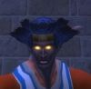

Les Terres de Kirin Tor
Fumazu
Points : 3

Joué par :
[ Information masquée ]
Age : jeune
Lieu de naisance : Brise-stellaire
Sexe : Homme
Race : Elfe
Faction : Alliance
Formation : Chasseur
Niveau : 60
Guilde : Templiers de la Lumière
Artisanat 1 : Artisant du cuir
Artisanat 2 : Dépeceur
Envoyer un MP
Informations hrp : Un chasseur assez basique plutot visible la nuit, localisation parisienne.
Description : Un elfe de la nuit à la peau sombre, à la démarche (hors combats) un peu lourde, au style général "campagnard". Il parle un langage un peu rural avec un peu de Darnassien des campagnes dans son Commun et des petits bruits rapellant des sons animaux au milieu. Il ne semble pas très fin au premier abord mais reste souvent pensif de longues heures à propos de tout et de rien. Ne semble pas aimer danser ni faire la fête en général, rougit facilement devant les femmes surtout si elles portent des vètements légers. Mal à l'aise si la situation devient intime ou si on lui parle de choses de "l'amour". Raconte sans difficulté à ses frêres et soeurs qu'il est originaire du village de Brise-Stellaire et que ses parents sont morts. Ne semble pas un fanatique religieux, il reste souvent à l'écart, on le considère comme un peu "sauvage". Il a pour meilleur ami un grand tigre à dents de sabre nommé Sturm, un peu balourd mais solide et courageux quoique parfois un peu imprudent (comme son maitre). Dans la commanderie, semble très proche de Felyndiria. Parle souvent des Taurens pour lesquels il semble avoir une certaine admiration. Semble aimer les déserts et les savanes dont il parle abondamment. Depuis son arrivée, il propose à tout un chacun de l'aide pour tout et n'importe quoi, et a l'air de vouloir se faire des amis même si ses tentatives sont souvent maladroites et parfois mal interprétées. Il semble maitriser de nombreuses armes et se bat indifferement à l'arc, au fusil, à la dague, à l'épée, à la hache ou au baton. Son équipement est en général de bonne qualité mais rarement de grande valeur.
Ère du Conflit [1]
Lune de la Force
Décade du Panda
Décade du Gorille
Décade de l'Ours
Lune d'Agilité
Décade du Tigre
Décade du Singe
Décade du Faucon
Lune de l'Esprit [1]
Décade de la Chouette
Décade de la Baleine
Décade du Lapin [1]
Retraite
Je me souviens? Je me souviens d?abord de mes amis, de mes frères templiers, de mes fidèles compagnons de route, de leur douceur, de leur colère, leur forces et leurs faiblesses, je me souviens du goût du sang dans ma bouche et d?une présence sur ma couche sommaire, de la douceur d?une peau contre la mienne, puis revient la douleur et le soleil et je ne peux plus me souvenir, plus penser, puis revient la soif et la douleur à nouveau puis le détachement puis à nouveau les souvenirs puis les jour brûlant et les nuits glaciales et la faim et la soif toujours plus aigue et la raison qui vacille et les souvenirs qui se troublent, kaléidoscopie, bric à brac d?images et de sons surnageant des sensations douloureuses. Mais oui je me souviens de ce qui a précédé car il me semble qu?il y eu un avant parfois j?en suis sûr et parfois j?en doute et je me laisse guider par la voix et par les couleurs et les images et par le venin des guêpes et? Je me souviens de l?enfant tauren au corps brisé agonisant, je me souviens de la sorcière des tarides, du vieux sorcier troll à la baie du butin, de l?elfe rendu fou par la bière des nains sombres, je me souviens, ils chantent en c?ur dans mon oreille et me parlent ou me dessinent le chemin à suivre, il rient de me voir ainsi, il se rient de ma douleur, de ma peine et de mon esprit qui part en morceaux, oh oui vous m?avez bien eu tous en m?amenant ici, en m?intrigant, en attisant ma curiosité en me parlant de Lui et de son savoir, de son enseignement? Et toujours la soif et les guêpes sur moi et les piqûres sans doute moins nombreuses à présent ou alors ma peau tellement déchirées que je ne sens plus rien, il a plu ce matin ou cette nuit ou ce midi ou je ne sais quand et j?ai pu boire, un peu et ma langue en gonflant a manqué de m?étouffer, mon nez grouillant de larves. Et je me souviens de l?enfant au pied du pilier, son corps fracassé par la chute, un jeune chasseur maladroit sans doute je pensais et il me montrait le pilier en mugissant sa langue bestiale et ses yeux terrifiés et la mort sur lui en un instant et la mort définitive surtout, si j?avais pu comprendre à ce moment là. Et puis le temps s?accélère d?un coup les jours s?enchaînent et j?ai vieilli et l?on me parle, vieux fous en mal d?alcool ou d?affection, d?un sage qui vivrait ici, aux milles pointes, et qui donnerait son savoir à qui oserait affronter la vraie mort et je repense à l?enfant et au pilier. Le temps passe à nouveau les étoiles au dessus de moi tournent si vite et les guêpes construisent autour de moi leur nid et je ne meurs toujours pas et je repense au schéma sur le sable, les guêpes ne sont que la première partie des trois enseignements et je sens le venin qui pétri mon cerveau et mon âme et je repense à la dame des bois et à mon enfance et tout devient plus clair et je la vois avec moi dans la caverne me rouant de coup, baisant les furlborgs en riant, se moquant de moi, affreuse guêpe monstrueuse me lardant de son dard cruel et mes yeux trop secs pour espérer pleurer réinventent sans cesse la réalité et toujours les souvenirs mais de plus en plus rapides et de plus en plus malsains et déconstruits et mon cerveau pulvérisé pour être reconstruit, intégrant le venin dans ses moindres parcelles puis le noir, l?absence de souvenir, le néant et la vie comme une chandelle prête à être soufflée qui vacille, je me souviens avoir espéré la mort, la délivrance enfin, la grâce, la fin de ces tourments, dans le noir, soufflant sur la bougie espérant voir la flamme s?éteindre et me laisser dans le noir, seul avec le chant, apaisé.
Un grognement sourd à mes cotés, Lui, il verse une boisson chaude dans une coupelle minuscule dans son énorme main. La coupelle semble en terre cuite toute simple mais milles lueurs prismatiques semblent s?en échapper, le liquide à l?intérieur semble arcanite en fusion et Ses yeux comme d?énorme émeraude me fixent quand il me tend la coupelle. Sa voix résonne à mes oreilles comme le hurlements des chouettards rendus fous par l?oubli de leur déesse et la langue qu?il me parle ressemble à une version démente du dialecte secret du cercle de Cenarius. Je tends la main vers la coupelle, ressentant d?un coup la sécheresse dont mon corps est le berceau, main semble bandées et vaguement difforme, comme une griffe un instant puis comme un simple moignon l?instant d?après. Ignorant ma main tendu il approche la coupelle de ma bouche et je ne peux que boire, en arrière plan je peux juger de sa masse formidable en perpétuelle évolution et son visage plus monstrueux que le plus terrible des seigneurs infernaux, le liquide coule dans mes veines, la terreur me submerge quand je vois que la coupelle qu?il me retire est pleine de petits asticots dentus, j?appelle l?inconscience de tout mes v?ux et pour une fois elle vient à moi. Ma pensée s?éparpille à nouveau pour je l?espère ne plus jamais revenir.
Le chant à nouveau, il me guide encore une fois vers la conscience, ce chant puissant et sourd, comme le bruit des arbres qui poussent, comme la respiration de la terre, comme le chant de l?arbre monde. Je m?éveille, combien de temps après, ou avant, tout se mélange et me retiens d?ouvrir les yeux, me retiens de confronter mon âme ou ce qu?il en reste à ces terribles visions, je respire lentement évaluant mes ressources physiques et psychologiques et ce qu?il reste dans mon sang de ce terrible venin hallucinogène que je sais à présent responsable des terribles transformations de mon hôte? Tout semble aller un peu mieux, je m?imagine toujours bandé, ou attaché mais ma raison semble à peu près de retour même si ma conscience continue de flotter dans un magma cotonneux vaguement douillet et que mon corps semble se balancer doucement en l?air. J?ouvre les yeux prudemment pour découvrir que je me tiens dans une classique hutte taurens, en effet entièrement bandé et allongé dans un hamac à une dizaine de centimètres du sol en pierre rouge. D?où je suis je peux voir une petite table où se trouvent divers remède, mes affaires jetées dans un coin et un autre hamac plus grand et vide. Dehors ça semble être la nuit et le chant résonne à nouveau, je décide de me laisser retomber dans le sommeil afin d?optimiser ma condition physique, j?accorde ma respiration sur la lente mélopée et je sombre à nouveau.
On me porte, on me porte sur le dos, un être massif me porte sans peine sur son dos, Lui, il me porte et me pose plutôt délicatement sur le sol, délicatement pour un être tel que lui et je remercie Elune machinalement de ne pas être brisé en deux à l?atterrissage. J?ouvre les yeux, c?est le jour et je suis dehors, sur le plateau. Le ciel d?un bleu immense, au dessus de moi, interminable, à ma droite la hutte, à ma gauche le feu de camp et l?entrée du nid et devant moi lui, debout me surplombant de toute sa masse se découpant dans le soleil haut dans le ciel. Je ne porte plus de bandage et je me souviens vaguement d?avoir été soigné, rudement mais soigné. Je me sens en vie, en forme, plus vraiment le même mais bel et bien vivant. C?est le moment de la seconde épreuve, je repense à la première et je calcule très sérieusement mes chances de courir jusqu?au bord du plateau et de sauter dans le vide afin d?y échapper. Il paraît tout à fait comprendre ce qui me passe par la tête et il tend la main vers le vide en me souriant. Je n?ai plus de fierté, plus rien à prouver, plus après les guêpes, je me lève péniblement, mes jambes sont faibles mais me porteront jusqu?à la falaise si nécessaire. Je franchi les dix mètres qui me séparent du bord le plus proche, je me sens libre, la tête lavée, optimisé mentalement mais je ne crois pas avoir le courage nécessaire à une autre épreuve telle que l?emprisonnement dans le nid des guêpes. Je sais que si je meurs ici, cela sera définitif, ce lieu est sacré, ou maudit, comme on veut, ici nul retour au cimetière, nul feu follet recherchant son corps, ici, juste la fin. Je trouve ça assez beau, purifier son esprit et ensuite le laisser aller, retrouver Elune et Cenarius, retrouver la Lumière, dans un dernier plongeon? Derrière moi, je l?entend rire de moi, de ma faiblesse, de la bonne blague qu?il racontera ce soir aux étoiles et à mon tour je souris, je ne suis pas purifié, je suis juste complètement fou, sans doute, je ris maintenant à gorge déployée, balançant mon corps doucement d?avant en arrière, mes pieds à demis dans le vide, les bras en croix. Et d?un coup j?imagine mon corps s?envolant? S?envolant quelques secondes avant de fondre comme une pierre vers le sol rouge des milles pointes, explosant comme un fruit trop mur, je m?imagine agonisant au pied du pilier et je revois l?enfant tauren mourrant doucement dans mes bras, ses yeux dans mes yeux, son âme s?envolant à jamais. Il n?était sans doute même pas arrivé en haut, l?escalade n?est pas aisée et les guêpes agressives, sans doute envoyé par sa tribu afin d?être initié par le fou de la montagne aux guêpes tueuses, trop jeune, trop léger, une rafale de vent lui fait perdre une prise puis la chute interminable et le choc terrible des centaines de mètres plus bas et la vie qui ne le quitte pas et l?agonie? En un instant je comprends le rôle que je dois jouer dans cette histoire, dans l?histoire de ce jeune chasseur tauren, l?histoire que je crois être la mienne parfois, je sais que je ne peux fuir maintenant, j?ai terminé son ascension et commencé à passer ses épreuves, je ne peux me soustraire au passage de relais terrible que j?ai accepté.
Je fais un pas en arrière et me retourne vers mon impitoyable bourreau. Du haut de ses trois mètres il me toise et m?invite à m?asseoir à ses cotés. Mon esprit est à nouveau serein, juste et droit comme la flèche qui va atteindre l??il du cerf à cent mètres et je prends place à ses cotés. Il y?a un grand sac posé à ses pieds il l?ouvre et en sort des rubans de viande séchée, du miel, une pipe et un drôle de tabac noir. Il tire aussi de son sac une outre et deux coupelles en terre cuite et une bouilloire en métal. Il me fais signe d?être attentif et il retourne la bouilloire dans sa main, j?aperçois un éclair bleuté qui ondule entre les poils, il, je ne sais toujours pas son nom, s?ébroue et avec une vitesse pratiquement surnaturelle saisit le petit serpent bleu entre ses doigts. Il le lève et le tient devant mes yeux. Je connais ce serpent, en Tanaris on dit à son propos que son venin est si rapide qu?il peut terrasser un Drake adulte en dix secondes. Le serpent ne cesse de mordre le poignet du tauren, le venin giclant brutalement des crochets à découvert, il approche les deux coupelles et maintient la tête du serpent au dessus afin qu?il puisse cracher à l?intérieur puis remet rapidement le serpent dans la bouilloire. Il met ensuite un peu de miel dans chaque coupelle et un peu d?eau, il pose ensuite les coupelles sur les braises du feu qui s?éteint doucement depuis des jours. Il me donne alors de la viande séchée et bourre la pipe. Nous mangeons et fumons ensemble tranquillement en regardant la nuit tomber sur les piliers rocheux. Le tabac me paraît avoir le goût de la terre, le goût des pierres mais aussi celui des feuilles et de la rosée. Il retourne un moment dans la hutte chercher un gros quignon de pain dur qu?il partage équitablement entre nous puis il retourne chercher les coupelles maintenant bien chaudes. Il trempe le pain dur dans la mixture et m?invite à faire de même puis il enfourne le pain par petites bouchées dans sa gueule immense. Je n?hésite pas, c?est plutôt amer mais pas trop effroyable, nous terminons ainsi notre repas alors que la nuit est complètement tombée sur la vallée. Je suis pris alors d?une étrange langueur, stupeur, torpeur que semble partager mon compagnon. Je me sens bien, il me sourit en secouant la bouilloire et en toctocant dessus pour narguer son prisonnier, je souris aussi, bêtement sans doute. Il s?allonge à moitié, je pose la tête sur son genou immense et il commence à chanter. La nuit s?étire et nous parlons sans nous parler, nous rêvons un rêve commun, un rêve d?apprentissage, un rêve de passions, d?amitiés et d?initiation, nous sommes vautours et nous survolons les plaines salines, nous parlons la langue des anges et je vois la grande chasse fantôme, je vois les âmes de mes victimes futures et passées, je communie avec elles, je vois celui qui me tuera et je suis en paix avec lui et mon guide s?appelle « corne d?argile » je lis son vrai nom au fond de son c?ur, les jours s?échappent à nouveau en filant et je suis la flèche et je suis la balle et je suis l??il du cerf et je suis « corne d?argile » et je suis la foret et le désert et nous changeons, devenons bêtes sauvages et nous chassons ensembles dans les plaines des tarides et nous survolons les murailles d?ogrimmar deux âmes mêlées en une, et nous devenons vieux et nos devenons jeunes et nous chantons ensemble et nous mourrons milles fois et nous nous endormons et nous nous réveillons?
Dur le réveil? Mal à la tête, faim, soif, se lever et retomber, se vomir dessus, regarder l?autre qui fait de même, se jeter sur l?outre, apaiser sa soif, partager les restes de nourritures, se cacher du soleil qui frappe fort? La hutte, le hamac, s?endormir à nouveau.
Je me souviens de ces quelques jours après l?épreuve du serpent, repos et recueillement, chants à la nuit tombée, repas légers ou inexistant puis changement de rythme, il m?éprouve physiquement, nous pratiquons la lutte, le tir sous toute ses formes et l?équilibre, je ne vois pas vraiment ce qu?il souhaite de moi, il ne m?explique rien se contentant de voir ce que je sais faire. Le troisième jour des exercices je commence à percevoir une différence, je ne suis ni plus fort, ni plus rapide, ni même plus adroit, non pas vraiment mais ce n?est plus vraiment la même chose. J?accompli les mêmes actions qu?auparavant, je n?ai juste plus besoin de les formaliser mentalement. Je suis l??il du cerf qui reçoit la flèche Je ferme les yeux et ma flèche vole vers sa cible car c?est ainsi que ça doit être, car c?est comme ça que c?est bien. Je ne suis pas plus adroit, pas plus rapide, je suis juste mieux placé dans l?univers, je ne plie plus l?univers à ma volonté, j?accompli la grande danse, je suis dans la grande chasse, ou je suis complètement fou?
De nouveau un schéma dans le sable comme avant l?épreuve des guêpes, il dessine le pilier, dessus il dessine la hutte et ensuite deux silhouettes, une petite et une grande cornue, moi, lui. Il trace trois traits, la troisième épreuve à présent.